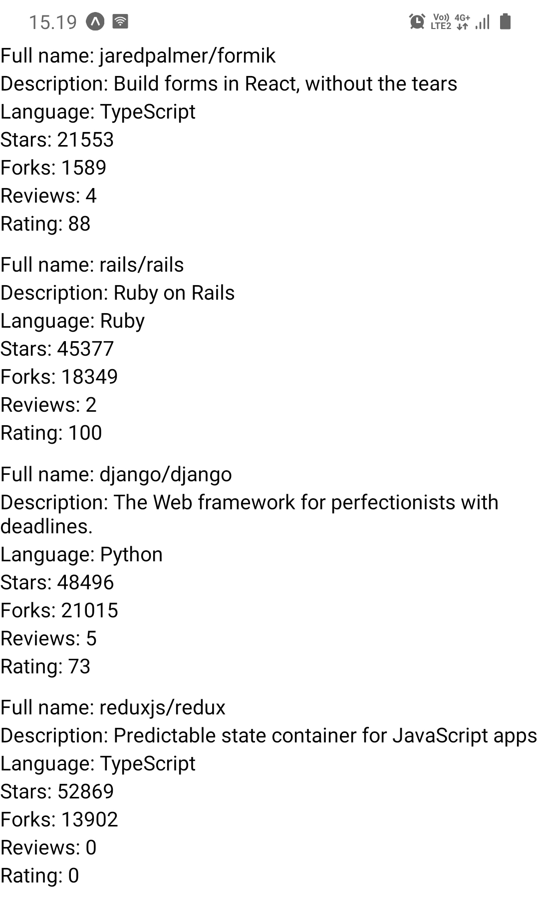
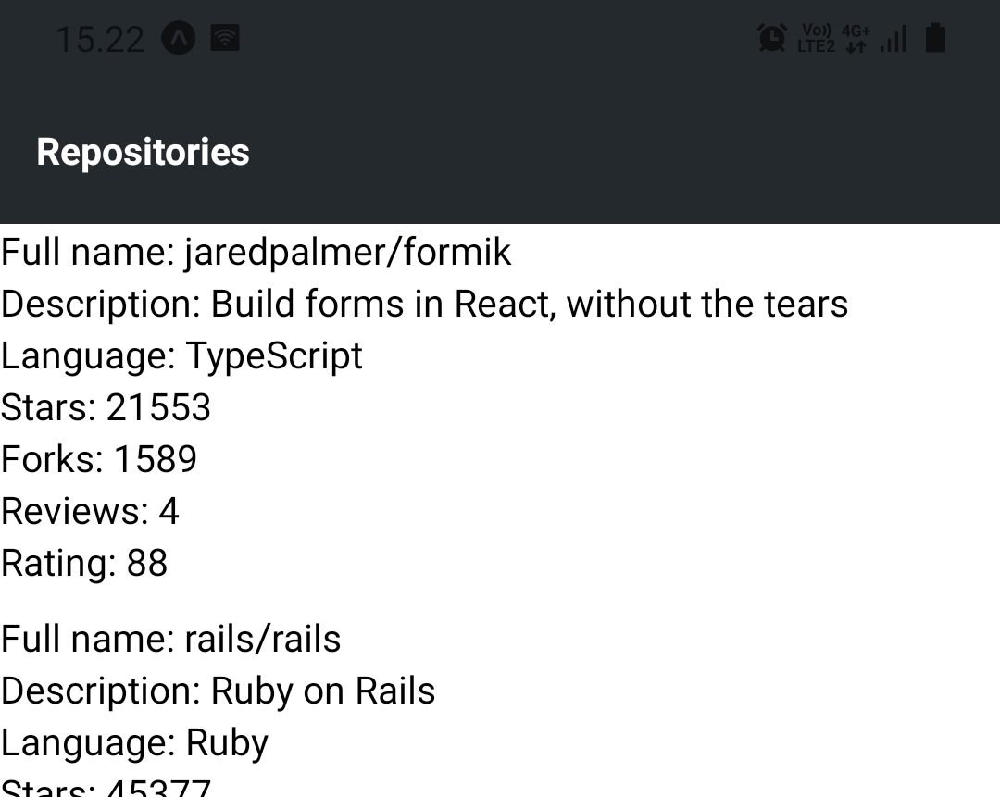
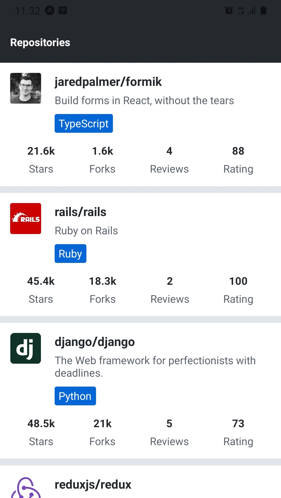
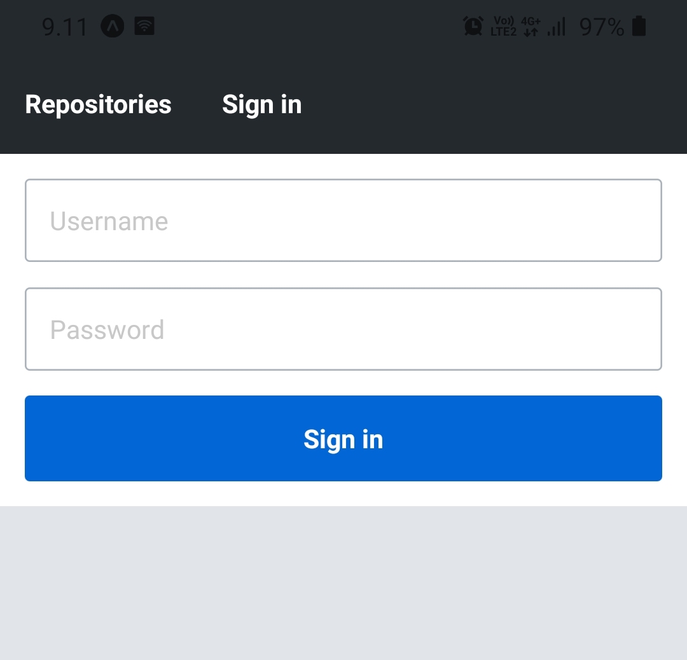
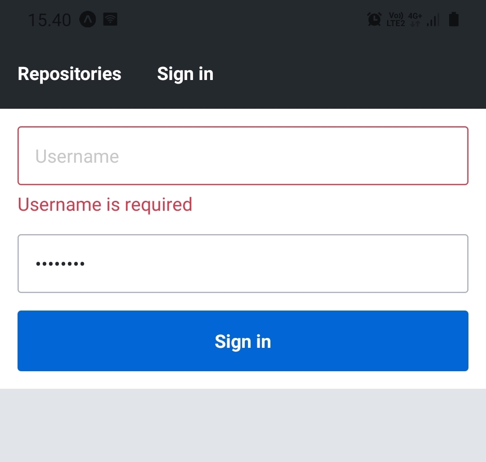

现在我们已经建立了我们的开发环境，我们可以进入React Native基础知识并开始开发我们的应用。在这一节中，我们将学习如何用React Native的核心组件构建用户界面，如何为这些核心组件添加样式属性，如何在视图之间转换，以及如何有效地管理表单的状态。
Core components
在前面的部分中，我们已经了解到我们可以使用React将组件定义为接收props作为参数并返回React元素树的函数。这个树通常用JSX语法表示。在浏览器环境中，我们使用了ReactDOM库，将这些组件变成可以被浏览器渲染的DOM树。下面是一个非常简单的组件的具体例子。
const HelloWorld = props => {
return <div>Hello world!</div>;
};
HelloWorld组件返回一个单一的div元素，它是用JJSX语法创建的。我们可能记得，这种JJSX语法被编译成React.createElement方法调用，例如这样。
React.createElement('div', null, 'Hello world!');
这行代码创建了一个div元素，没有任何prop，只有一个子元素，是一个字符串"Hello world"。当我们使用ReactDOM.render方法将这个组件渲染成一个根DOM元素时，div元素将被渲染成相应的DOM元素。
正如我们所看到的，React并不拘泥于某种环境，例如浏览器环境。相反，有一些库，如ReactDOM，可以在特定的环境中渲染一组预定义组件，如DOM元素。在React Native中，这些预定义的组件被称为核心组件。
核心组件是由React Native提供的一组组件，在幕后利用平台的本地组件。让我们用React Native来实现前面的例子。
import { Text } from 'react-native'; // highlight-line
const HelloWorld = props => {
return <Text>Hello world!</Text>; // highlight-line
};
所以我们从React Native导入Text组件，用一个Text元素替换div元素。许多熟悉的DOM元素都有其React Native的 "对应物"。下面是一些从React Native's Core Components documentation中挑选的例子。
- Text 组件是唯一的React Native组件，可以有文本的孩子。它类似于例如<strong>和<h1>元素。
- View组件是基本的用户界面构建块，类似于<div>元素。
- TextInput组件是一个类似于<input>元素的文本字段组件。
核心组件和DOM元素之间有几个明显的区别。第一个区别是，Text组件是唯一的React Native组件，可以有文本的孩子。这意味着你不能，例如，用前面的例子中的Text组件替换View组件。
第二个明显的区别是与事件处理程序有关。当使用DOM元素时，我们习惯于添加事件处理程序，如onClick到基本上任何元素，如<div>和<button>。在React Native中，我们必须仔细阅读API文档以了解一个组件接受哪些事件处理程序（以及其他prop）。例如，Pressable组件提供了用于监听不同类型的按压事件的prop。例如，我们可以使用该组件的onPressprop来监听新闻事件。
import { Text, Pressable, Alert } from 'react-native';
const PressableText = props => {
return (
<Pressable
onPress={() => Alert.alert('You pressed the text!')}
>
<Text>You can press me</Text>
</Pressable>
);
};
现在我们对核心组件有了基本的了解，让我们开始给我们的项目一些结构。在你项目的根目录下创建一个src目录，在src目录下创建一个components目录。在components目录中创建一个文件Main.jsx，内容如下。
import Constants from 'expo-constants';
import { Text, StyleSheet, View } from 'react-native';
const styles = StyleSheet.create({
container: {
marginTop: Constants.statusBarHeight,
flexGrow: 1,
flexShrink: 1,
},
});
const Main = () => {
return (
<View style={styles.container}>
<Text>Rate Repository Application</Text>
</View>
);
};
export default Main;
接下来，让我们在App文件中使用Main组件，该文件位于我们项目的根目录下的App.js。将该文件的当前内容替换成这样。
import Main from './src/components/Main';
const App = () => {
return <Main />;
};
export default App;
Manually reloading the application
正如我们所见，当我们对代码进行修改时，Expo会自动重新加载应用。然而，有时自动重载可能不起作用，必须手动重载应用。这可以通过应用内的开发者菜单来实现。
你可以通过摇动你的设备或在iOS模拟器中选择硬件菜单内的 "摇动手势 "来访问开发者菜单。当你的应用在iOS模拟器中运行时，你也可以使用⌘D键盘快捷键，或在Mac OS上的Android模拟器中运行时使用⌘M，在Windows和Linux上使用Ctrl+M。
一旦开发者菜单打开，只需按下 "重新加载 "就可以重新加载应用。在应用被重新加载后，自动重新加载应该可以工作，而不需要手动重新加载。
Exercise 10.3.
Exercise 10.3: the reviewed repositories list
在这个练习中，我们将实现第一个版本的已审查的软件库列表。列表应该包含版本库的全名、描述、语言、分叉数、星级数、平均评分和评论数。幸运的是React Native提供了一个显示数据列表的便捷组件，这就是FlatList组件。
实现组件RepositoryList和RepositoryItem在components目录'的文件RepositoryList.jsx和RepositoryItem.jsx。RepositoryList组件应该渲染FlatList组件和RepositoryItem列表中的单个项目（提示：使用FlatList组件的renderItemprop）。用这个作为RepositoryList.jsx文件的基础。
import { FlatList, View, StyleSheet } from 'react-native';
const styles = StyleSheet.create({
separator: {
height: 10,
},
});
const repositories = [
{
id: 'jaredpalmer.formik',
fullName: 'jaredpalmer/formik',
description: 'Build forms in React, without the tears',
language: 'TypeScript',
forksCount: 1589,
stargazersCount: 21553,
ratingAverage: 88,
reviewCount: 4,
ownerAvatarUrl: 'https://avatars2.githubusercontent.com/u/4060187?v=4',
},
{
id: 'rails.rails',
fullName: 'rails/rails',
description: 'Ruby on Rails',
language: 'Ruby',
forksCount: 18349,
stargazersCount: 45377,
ratingAverage: 100,
reviewCount: 2,
ownerAvatarUrl: 'https://avatars1.githubusercontent.com/u/4223?v=4',
},
{
id: 'django.django',
fullName: 'django/django',
description: 'The Web framework for perfectionists with deadlines.',
language: 'Python',
forksCount: 21015,
stargazersCount: 48496,
ratingAverage: 73,
reviewCount: 5,
ownerAvatarUrl: 'https://avatars2.githubusercontent.com/u/27804?v=4',
},
{
id: 'reduxjs.redux',
fullName: 'reduxjs/redux',
description: 'Predictable state container for JavaScript apps',
language: 'TypeScript',
forksCount: 13902,
stargazersCount: 52869,
ratingAverage: 0,
reviewCount: 0,
ownerAvatarUrl: 'https://avatars3.githubusercontent.com/u/13142323?v=4',
},
];
const ItemSeparator = () => <View style={styles.separator} />;
const RepositoryList = () => {
return (
<FlatList
data={repositories}
ItemSeparatorComponent={ItemSeparator}
// other props
/>
);
};
export default RepositoryList;
Do not alter the contents of the repositories variable, it should contain everything you need to complete this exercise. Render the RepositoryList component in the Main component which we previously added to the Main.jsx file. The reviewed repository list should roughly look something like this:

Style
现在我们对核心组件的工作原理有了基本的了解，我们可以用它们来构建一个简单的用户界面，是时候添加一些样式了。在第二章节中，我们了解到在浏览器环境中我们可以使用CSS定义React组件的样式属性。我们可以选择使用styleprop内联定义这些样式，或者在CSS文件中使用合适的选择器来定义。
样式属性附加到React Native's核心组件的方式和附加到DOM元素的方式有很多相似之处。在React Native中，大多数的核心组件都接受一个名为style的prop。styleprop接受一个带有样式属性及其值的对象。这些样式属性在大多数情况下与CSS相同，但是，属性名称采用camelCase。这意味着CSS属性如padding-top和font-size被写成paddingTop和fontSize。下面是一个关于如何使用styleprop的简单例子。
import { Text, View } from 'react-native';
const BigBlueText = () => {
return (
<View style={{ padding: 20 }}>
<Text style={{ color: 'blue', fontSize: 24, fontWeight: '700' }}>
Big blue text
</Text>
</View>
);
};
在属性名称的基础上，你可能已经注意到这个例子中的另一个不同之处。在CSS中，数字属性值通常有一个单位，如px, %, em或rem。在React Native中，所有与尺寸有关的属性值，如width, height, padding, and margin以及字体大小都是无单位。这些无单位的数值代表与强度无关的像素。如果你想知道某些核心组件的可用样式属性是什么，请查看React Native Styling Cheat Sheet。
一般来说，直接在styleprop中定义样式被认为不是一个好主意，因为它使组件变得臃肿和不清晰。相反，我们应该使用StyleSheet.create方法在组件的渲染函数之外定义样式。StyleSheet.create方法接受一个单一的参数，它是一个由命名的样式对象组成的对象，它从给定的对象中创建一个StyleSheet样式引用。下面是一个使用StyleSheet.create方法重构前一个例子的例子。
import { Text, View, StyleSheet } from 'react-native'; // highlight-line
// highlight-start
const styles = StyleSheet.create({
container: {
padding: 20,
},
text: {
color: 'blue',
fontSize: 24,
fontWeight: '700',
},
});
// highlight-end
const BigBlueText = () => {
return (
<View style={styles.container}> // highlight-line
<Text style={styles.text}> // highlight-line
Big blue text
<Text>
</View>
);
};
我们创建了两个命名的样式对象，styles.container和styles.text。在组件内部，我们可以像访问普通对象中的任何键一样，访问特定的样式对象。
除了一个对象，styleprop还接受一个对象的数组。在数组的情况下，对象从左到右被合并，这样后一个样式属性就会被优先考虑。这样做是递归的，所以我们可以有一个数组，其中包含一个样式数组，如此类推。如果一个数组包含计算为错误的值，如null或undefined，这些值将被忽略。这使得定义条件样式很容易，例如，基于一个prop的值。下面是一个条件性样式的例子。
import { Text, View, StyleSheet } from 'react-native';
const styles = StyleSheet.create({
text: {
color: 'grey',
fontSize: 14,
},
blueText: {
color: 'blue',
},
bigText: {
fontSize: 24,
fontWeight: '700',
},
});
const FancyText = ({ isBlue, isBig, children }) => {
const textStyles = [
styles.text,
isBlue && styles.blueText,
isBig && styles.bigText,
];
return <Text style={textStyles}>{children}</Text>;
};
const Main = () => {
return (
<>
<FancyText>Simple text</FancyText>
<FancyText isBlue>Blue text</FancyText>
<FancyText isBig>Big text</FancyText>
<FancyText isBig isBlue>
Big blue text
</FancyText>
</>
);
};
在这个例子中，我们使用&&操作符，语句为condition && exprIfTrue。如果condition计算为真，这个语句就会产生exprIfTrue，否则就会产生condition，在这种情况下是一个计算为假的值。这是一个使用极为广泛和方便的速记方法。另一个选择是使用例如条件运算符，condition ? exprIfTrue : exprIfFalse。
Consistent user interface with theming
让我们坚持风格化的概念，但要有更广泛的视角。我们中的大多数人都使用过许多不同的应用，并可能同意，使一个好的用户界面的一个特征是一致性。这意味着用户界面组件的外观，如其字体大小、字体家族和颜色都遵循一个一致的模式。为了实现这一点，我们必须以某种方式参数化不同样式属性的值。这种方法通常被称为主题化。
流行的用户界面库如Bootstrap和Material UI的用户可能已经对主题化相当熟悉。尽管主题化的实现方式不同，但主要的想法是在定义样式时总是使用诸如colors.primary之类的变量，而不是诸如#0366d6之类的"神奇数字"。这导致了一致性和灵活性的提高。
让我们看看主题化在我们的应用中是如何实际运作的。我们将使用大量具有不同变化的文本，例如不同的字体大小和颜色。因为React Native不支持全局样式，我们应该创建自己的Text组件来保持文本内容的一致性。让我们开始吧，在src目录下的theme.js文件中添加以下主题配置对象。
const theme = {
colors: {
textPrimary: '#24292e',
textSecondary: '#586069',
primary: '#0366d6',
},
fontSizes: {
body: 14,
subheading: 16,
},
fonts: {
main: 'System',
},
fontWeights: {
normal: '400',
bold: '700',
},
};
export default theme;
接下来，我们应该创建实际的Text组件，使用这个主题配置。在我们已经有其他组件的components目录中创建一个Text.jsx文件。在Text.jsx文件中添加以下内容。
import { Text as NativeText, StyleSheet } from 'react-native';
import theme from '../theme';
const styles = StyleSheet.create({
text: {
color: theme.colors.textPrimary,
fontSize: theme.fontSizes.body,
fontFamily: theme.fonts.main,
fontWeight: theme.fontWeights.normal,
},
colorTextSecondary: {
color: theme.colors.textSecondary,
},
colorPrimary: {
color: theme.colors.primary,
},
fontSizeSubheading: {
fontSize: theme.fontSizes.subheading,
},
fontWeightBold: {
fontWeight: theme.fontWeights.bold,
},
});
const Text = ({ color, fontSize, fontWeight, style, ...props }) => {
const textStyle = [
styles.text,
color === 'textSecondary' && styles.colorTextSecondary,
color === 'primary' && styles.colorPrimary,
fontSize === 'subheading' && styles.fontSizeSubheading,
fontWeight === 'bold' && styles.fontWeightBold,
style,
];
return <NativeText style={textStyle} {...props} />;
};
export default Text;
现在我们已经实现了自己的文本组件，具有一致的颜色、字体大小和字体重量的变体，我们可以在应用的任何地方使用。我们可以像这样使用不同的prop获得不同的文本变化。
import Text from './Text';
const Main = () => {
return (
<>
<Text>Simple text</Text>
<Text style={{ paddingBottom: 10 }}>Text with custom style</Text>
<Text fontWeight="bold" fontSize="subheading">
Bold subheading
</Text>
<Text color="textSecondary">Text with secondary color</Text>
</>
);
};
export default Main;
如果你喜欢，可以自由地扩展或修改这个组件。创建可重复使用的文本组件，如使用Subheading组件的Text，可能也是一个好主意。另外，随着你的应用的进展，不断地扩展和修改主题配置。
Using flexbox for layout
我们要讲的最后一个与造型有关的概念是用flexbox实现布局。那些对CSS比较熟悉的人知道，flexbox不仅与React Native有关，它在Web开发中也有很多用例。事实上，那些知道flexbox在web开发中如何工作的人可能不会从这一节中学到那么多。不过，让我们来学习或复习一下Flexbox的基础知识。
Flexbox是一个由两个独立组件组成的布局实体：一个flex container和里面的一组flex items。Flex容器有一组属性来控制其项目的流动。要使一个组件成为柔性容器，它必须将样式属性display设置为flex，这是display属性的默认值。下面是一个柔性容器的例子。
import { View, StyleSheet } from 'react-native';
const styles = StyleSheet.create({
flexContainer: {
flexDirection: 'row',
},
});
const FlexboxExample = () => {
return <View style={styles.flexContainer}>{/* ... */}</View>;
};
也许柔性容器最重要的属性是以下这些。
- flexDirection属性控制柔性项目在容器中的布局方向。这个属性的可能值是row, row-reverse, column（默认值）和column-reverse。弹性方向row将从左到右排列弹性项目，而column从上到下。*-reverse方向将只是颠倒柔性项目的顺序。
- justifyContent属性控制柔性项目沿主轴（由flexDirection属性定义）的对齐。这个属性的可能值是flex-start（默认值），flex-end，center，space-between，space-around和space-evenly。
- alignItems 属性的作用与justifyContent相同，但用于相反的轴。这个属性的可能值是flex-start, flex-end, center, baseline 和 stretch（默认值）。
让我们继续讨论柔性项目。如前所述，一个柔性容器可以包含一个或多个柔性项目。挠性项目有一些属性，控制它们在同一挠性容器中对其他挠性项目的行为。要使一个组件成为灵活项目，你所要做的就是把它设置为一个灵活容器的直接子项。
import { View, Text, StyleSheet } from 'react-native';
const styles = StyleSheet.create({
flexContainer: {
display: 'flex',
},
flexItemA: {
flexGrow: 0,
backgroundColor: 'green',
},
flexItemB: {
flexGrow: 1,
backgroundColor: 'blue',
},
});
const FlexboxExample = () => {
return (
<View style={styles.flexContainer}>
<View style={styles.flexItemA}>
<Text>Flex item A</Text>
</View>
<View style={styles.flexItemB}>
<Text>Flex item B</Text>
</View>
</View>
);
};
灵活性项目最常用的属性之一是flexGrow 属性。它接受一个无单位的值，该值定义了在必要的情况下，一个flex项目的增长能力。如果所有灵活项的flexGrow都是1，它们将均匀地分享所有可用空间。如果一个弹性项目的flexGrow为0，它将只使用其内容所需的空间，而将剩余的空间留给其他弹性项目。
这里有一个更加互动和具体的例子，说明如何使用flexbox来实现一个具有页眉、页身和页脚的简单卡片组件：Flexbox例子。
接下来，请阅读Flexbox完全指南这篇文章，其中有全面的flexbox的视觉例子。在Flexbox Playground中玩玩Flexbox属性也是一个好主意，看看不同的Flexbox属性是如何影响布局的。请记住，在React Native中，除了camelCase命名外，属性名称与CSS中的属性名称是一样的。然而，属性值，如flex-start和space-between是完全一样的。
NB: React Native和CSS在flexbox方面有一些区别。最重要的区别是，在React Native中，flexDirection属性的默认值是column。同样值得注意的是，flex速记在React Native中不接受多个值。更多关于React Native's flexbox的实现可以在文档中阅读。
Exercises 10.4. - 10.5.
Exercise 10.4: the app bar
我们很快就会需要在我们的应用中的不同视图之间进行导航。这就是为什么我们需要一个app bar来显示标签，以便在不同的视图之间切换。在components文件夹中创建一个文件AppBar.jsx，内容如下。
import { View, StyleSheet } from 'react-native';
import Constants from 'expo-constants';
const styles = StyleSheet.create({
container: {
paddingTop: Constants.statusBarHeight,
// ...
},
// ...
});
const AppBar = () => {
return <View style={styles.container}>{/* ... */}</View>;
};
export default AppBar;
现在，AppBar组件将防止状态栏与内容重叠，你可以删除我们先前在Main.jsx文件中为Main组件添加的marginTop样式。AppBar组件目前应该包含一个文本为 "Repositories "的标签。通过使用Pressable组件使标签可被按下，但你不需要以任何方式处理onPress事件。将AppBar组件添加到Main组件中，使其成为屏幕中最上面的组件。AppBar组件应该如下所示：

图片中应用栏的背景颜色是#24292e，但你也可以使用任何其他颜色。把应用栏的背景颜色添加到主题配置中可能是一个好主意，这样在需要时就可以很容易地改变它。另一个好主意是将应用栏的标签分离成自己的组件，如AppBarTab，这样将来就很容易添加新的标签。
Exercise 10.5: polished reviewed repositories list
当前版本的审查库列表看起来相当黯淡。修改RepositoryItem组件，使其同时显示版本库作者的头像。你可以通过使用Image组件来实现这一点。大于或等于1000的数字，如星星和叉子的数量，应该以千位数显示，精度为小数点后一位，并加上 "k "的后缀。这意味着，例如8439的叉子数应该显示为 "8.4k"。此外，还要对该组件的整体外观进行修饰，使审查过的软件库列表如下所示：

在图片中，Main组件的背景颜色被设置为#e1e4e8而RepositoryItem组件的背景颜色被设置为white。语言标签的背景色是#0366d6，这是主题配置中colors.primary的变量值。记住要利用我们之前实现的Text组件。同样在需要的时候，把RepositoryItem组件拆成小的组件。
Routing
当我们开始扩展我们的应用时，我们将需要一种方法在不同的视图之间转换，如存储库视图和签到视图。在第7章节中，我们熟悉了React router库，并学会了如何使用它来实现Web应用中的路由。
在React Native应用中的路由与Web应用中的路由有些不同。主要的区别是，我们不能用URL来引用页面，我们在浏览器的地址栏里输入URL，也不能用浏览器的历史API来回浏览用户的历史。然而，这只是我们所使用的路由器接口的问题。
使用React Native，我们可以使用整个React路由器的核心，包括钩子和组件。与浏览器环境的唯一区别是，我们必须用React Native兼容的NativeRouter取代BrowserRouter，该库由react-router-native提供。让我们从安装react-router-native库开始。
npm install react-router-native
接下来，打开App.js文件，将NativeRouter组件添加到App组件。
import { StatusBar } from 'expo-status-bar';
import { NativeRouter } from 'react-router-native'; // highlight-line
import Main from './src/components/Main';
const App = () => {
return (
// highlight-start
<>
<NativeRouter>
<Main />
</NativeRouter>
<StatusBar style="auto" />
</>
// highlight-end
);
};
export default App;
一旦路由器就位，让我们在Main.jsx文件中的Main组件上添加我们的第一个路由。
import { StyleSheet, View } from 'react-native';
import { Route, Routes, Navigate } from 'react-router-native'; // highlight-line
import RepositoryList from './RepositoryList';
import AppBar from './AppBar';
import theme from '../theme';
const styles = StyleSheet.create({
container: {
backgroundColor: theme.colors.mainBackground,
flexGrow: 1,
flexShrink: 1,
},
});
const Main = () => {
return (
<View style={styles.container}>
<AppBar />
// highlight-start
<Routes>
<Route path="/" element={<RepositoryList />} exact />
<Route path="*" element={<Navigate to="/" replace />} />
</Routes>
// highlight-end
</View>
);
};
export default Main;
就是这样!Routes里面的最后一个Route是用来捕捉与之前定义的路径不匹配的路径。在这种情况下，我们想导航到主视图。
Exercises 10.6. - 10.7.
Exercise 10.6: the sign in view
我们将很快实现一个表单，用户可以用它来登录我们的应用。在此之前，我们必须实现一个可以从应用栏中访问的视图。在components目录下创建一个文件SignIn.jsx，内容如下。
import Text from './Text';
const SignIn = () => {
return <Text>The sign in view</Text>;
};
export default SignIn;
在Main组件中为这个SignIn组件设置一个路由。同时在应用栏中的 "存储库 "标签旁边添加一个带有 "登录 "文字的标签。用户应该能够通过按下标签在两个视图之间导航（提示：你可以使用React路由器's Link 组件）。
Exercise 10.7: scrollable app bar
由于我们要在应用栏中添加更多的标签，一旦标签不能适应屏幕，允许水平滚动是个好主意。ScrollView组件恰恰是完成这项工作的合适组件。
用一个ScrollView组件来包裹AppBar组件的标签。
const AppBar = () => {
return (
<View style={styles.container}>
<ScrollView horizontal>{/* ... */}</ScrollView> // highlight-line
</View>
);
};
设置horizontalproptrue将使ScrollView组件在内容无法适应屏幕时水平滚动。注意，你需要给ScrollView组件添加合适的样式属性，这样标签就会以行的形式放置在flex容器内。你可以通过添加标签来确保应用栏可以水平滚动，直到最后一个标签无法适应屏幕。只要记得在应用栏如期工作后删除多余的标签。
Form state management
现在我们有一个签到视图的占位符，下一步是实现签到表格。在这之前，让我们从更广泛的角度来讨论表单。
表单的实现在很大程度上依赖于状态管理。使用React的useState钩子来进行状态管理可能会完成较小的表单的工作。然而，对于更复杂的表单，它将很快使状态管理变得相当乏味。幸运的是，在React生态系统中，有许多好的库可以缓解表单的状态管理问题。其中一个库是Formik。
Formik的主要概念是context和field。Formik's context由Formik组件提供，它包含表单的状态。状态由表单字段的信息组成。这些信息包括例如每个字段的值和验证错误。状态的字段可以通过使用useField钩子或Field组件的名称来引用。
让我们通过创建一个计算身体质量指数的表单来看看它的实际效果。
import { Text, TextInput, Pressable, View } from 'react-native';
import { Formik, useField } from 'formik';
const initialValues = {
mass: '',
height: '',
};
const getBodyMassIndex = (mass, height) => {
return Math.round(mass / Math.pow(height, 2));
};
const BodyMassIndexForm = ({ onSubmit }) => {
const [massField, massMeta, massHelpers] = useField('mass');
const [heightField, heightMeta, heightHelpers] = useField('height');
return (
<View>
<TextInput
placeholder="Weight (kg)"
value={massField.value}
onChangeText={text => massHelpers.setValue(text)}
/>
<TextInput
placeholder="Height (m)"
value={heightField.value}
onChangeText={text => heightHelpers.setValue(text)}
/>
<Pressable onPress={onSubmit}>
<Text>Calculate</Text>
</Pressable>
</View>
);
};
const BodyMassIndexCalculator = () => {
const onSubmit = values => {
const mass = parseFloat(values.mass);
const height = parseFloat(values.height);
if (!isNaN(mass) && !isNaN(height) && height !== 0) {
console.log(`Your body mass index is: ${getBodyMassIndex(mass, height)}`);
}
};
return (
<Formik initialValues={initialValues} onSubmit={onSubmit}>
{({ handleSubmit }) => <BodyMassIndexForm onSubmit={handleSubmit} />}
</Formik>
);
};
这个例子不是我们应用的一部分，所以你不需要把这个代码添加到应用中。然而，你可以在Expo Snack中尝试一下这个例子。Expo Snack是一个React Native的在线编辑器，类似于JSFiddle和CodePen。它是一个快速尝试代码的有用平台。你可以使用链接与他人分享Expo Snacks，或者将它们作为Snack Player嵌入到网站中。你可能在这个材料和React Native文档中撞见了Snack Player的例子。
在这个例子中，我们在BodyMassIndexCalculator组件中定义了Formik上下文，并为它提供了初始值和一个提交回调。初始值是通过initialValuesprop提供的，是一个以字段名为键、以相应的初始值为值的对象。提交回调是通过onSubmitprop提供的，它在handleSubmit函数被调用时被调用，条件是没有任何验证错误。Formik组件的子女是一个函数，它被调用的props包括与状态有关的信息和行动，如handleSubmit函数。
BodyMassIndexForm组件包含上下文和文本输入之间的状态绑定。我们使用useField钩子来获取一个字段的值并改变它。_useField_钩子有一个参数，是字段的名称，它返回一个有三个值的数组，[field, meta, helpers]。字段对象包含字段的值，元对象包含字段的元信息，如可能的错误信息，帮助者对象包含改变字段状态的不同操作，如setValue函数。请注意，使用useField钩子的组件必须在Formik's context_之内。这意味着该组件必须是Formik组件的一个子嗣。
这里是我们之前例子的互动版本。Formik例子。
在前面的例子中，使用useField钩子和TextInput组件会导致重复的代码。让我们把这些重复的代码提取到FormikTextInput组件中，并创建一个自定义的TextInput组件，使文本输入在视觉上更悦目。首先，让我们安装Formik。
接下来，在components目录下创建一个文件TextInput.jsx，内容如下。
import { TextInput as NativeTextInput, StyleSheet } from 'react-native';
const styles = StyleSheet.create({});
const TextInput = ({ style, error, ...props }) => {
const textInputStyle = [style];
return <NativeTextInput style={textInputStyle} {...props} />;
};
export default TextInput;
让我们进入FormikTextInput组件，将Formik的状态绑定添加到TextInput组件。在components目录下创建一个文件FormikTextInput.jsx，内容如下。
import { StyleSheet } from 'react-native';
import { useField } from 'formik';
import TextInput from './TextInput';
import Text from './Text';
const styles = StyleSheet.create({
errorText: {
marginTop: 5,
},
});
const FormikTextInput = ({ name, ...props }) => {
const [field, meta, helpers] = useField(name);
const showError = meta.touched && meta.error;
return (
<>
<TextInput
onChangeText={value => helpers.setValue(value)}
onBlur={() => helpers.setTouched(true)}
value={field.value}
error={showError}
{...props}
/>
{showError && <Text style={styles.errorText}>{meta.error}</Text>}
</>
);
};
export default FormikTextInput;
通过使用FormikTextInput组件，我们可以像这样重构前面例子中的BodyMassIndexForm组件。
const BodyMassIndexForm = ({ onSubmit }) => {
return (
<View>
<FormikTextInput name="mass" placeholder="Weight (kg)" /> // highlight-line
<FormikTextInput name="height" placeholder="Height (m)" /> //highlight-line
<Pressable onPress={onSubmit}>
<Text>Calculate</Text>
</Pressable>
</View>
);
};
我们可以看到，实现处理TextInput组件的Formik绑定的TextInput组件可以节省大量的代码。如果你的Formik表单使用了其他的输入组件，为它们实现类似的抽象也是一个好主意。
Exercise 10.8.
Exercise 10.8: the sign in form
为我们之前在SignIn.jsx文件中添加的SignIn组件实现一个登录表单。签到表格应该包括两个文本字段，一个是用户名，一个是密码。还应该有一个提交表单的按钮。你不需要实现一个onSubmit回调函数，只要在表单提交时使用console.log记录表单的值就足够了。
const onSubmit = (values) => {
console.log(values);
};
记得利用我们之前实现的FormikTextInput组件。你可以使用TextInput组件中的secureTextEntryprop来掩盖密码输入。
签到表格看起来应该是这样的。

Form validation
Formik为表单验证提供了两种方法：一个验证函数或一个验证模式。一个验证函数是为Formik组件提供的一个函数，作为validateprop的值。它接收表单的值作为一个参数，并返回一个包含可能的字段特定错误信息的对象。
第二种方法是验证模式，它作为validationSchemaprop的值提供给Formik组件。这个验证模式可以通过一个叫做Yup的验证库来创建。让我们从安装Yup开始吧。
接下来，作为一个例子，让我们为我们之前实现的体重指数表格创建验证模式。我们要验证mass和height这两个字段是否存在，并且是数字。另外，mass的值应该大于或等于1，height的值应该大于或等于0.5。下面是我们定义模式的方式。
import * as yup from 'yup'; // highlight-line
// ...
// highlight-start
const validationSchema = yup.object().shape({
mass: yup
.number()
.min(1, 'Weight must be greater or equal to 1')
.required('Weight is required'),
height: yup
.number()
.min(0.5, 'Height must be greater or equal to 0.5')
.required('Height is required'),
});
// highlight-end
const BodyMassIndexCalculator = () => {
// ...
return (
<Formik
initialValues={initialValues}
onSubmit={onSubmit}
validationSchema={validationSchema} // highlight-line
>
{({ handleSubmit }) => <BodyMassIndexForm onSubmit={handleSubmit} />}
</Formik>
);
};
每次字段的值发生变化时，以及调用handleSubmit函数时，都会默认进行验证。如果验证失败，Formik组件的onSubmitprop所提供的函数不会被调用。
我们之前实现的FormikTextInput组件会显示字段的错误信息，如果它存在并且字段被 "触摸"，意味着字段已经收到并失去焦点。
const FormikTextInput = ({ name, ...props }) => {
const [field, meta, helpers] = useField(name);
// Check if the field is touched and the error message is present
const showError = meta.touched && meta.error;
return (
<>
<TextInput
onChangeText={(value) => helpers.setValue(value)}
onBlur={() => helpers.setTouched(true)}
value={field.value}
error={showError}
{...props}
/>
{/* Show the error message if the value of showError variable is true */}
{showError && <Text style={styles.errorText}>{meta.error}</Text>}
</>
);
};
Exercise 10.9.
Exercise 10.9: validating the sign in form
验证签到表单，使用户名和密码字段都是必填的。请注意，在前面的练习中实现的onSubmit回调，不应该被调用如果表单验证失败。
当前实现的FormikTextInput组件应该在触及的字段有错误时显示错误信息。通过给它一个红色的颜色来强调这个错误信息。
在红色的错误信息之上，通过给它一个红色的边框颜色，给一个无效的字段一个错误的视觉指示。记住，如果一个字段有错误，FormikTextInput组件将TextInput组件的errorprop设置为true。你可以使用errorprop的值来给TextInput组件附加条件样式。
下面是签到表单中的无效字段的大致情况。

这个实现中使用的红色是#d73a4a。
Platform specific code
React Native的一大好处是，我们不需要担心应用是否在Android或iOS设备上运行。然而，在某些情况下，我们可能需要执行平台特定代码。例如，这种情况可能是在不同的平台上使用一个组件的不同实现。
我们可以通过Platform.OS常量来访问用户的平台。
import { React } from 'react';
import { Platform, Text, StyleSheet } from 'react-native';
const styles = StyleSheet.create({
text: {
color: Platform.OS === 'android' ? 'green' : 'blue',
},
});
const WhatIsMyPlatform = () => {
return <Text style={styles.text}>Your platform is: {Platform.OS}</Text>;
};
Platform.OS常量的可能值是android和ios。另一个定义平台特定代码分支的有用方法是使用Platform.select方法。给定一个对象，其键值为ios、android、native和default之一，Platform.select方法返回最适合用户当前运行平台的值。我们可以用Platform.select方法重写前面例子中的styles变量，就像这样。
const styles = StyleSheet.create({
text: {
color: Platform.select({
android: 'green',
ios: 'blue',
default: 'black',
}),
},
});
我们甚至可以使用Platform.select方法来要求一个特定平台的组件。
const MyComponent = Platform.select({
ios: () => require('./MyIOSComponent'),
android: () => require('./MyAndroidComponent'),
})();
<MyComponent />;
然而，实现和导入平台特定组件（或任何其他代码）的更复杂的方法是使用.ios.jsx和.android.jsx文件扩展。请注意，.jsx扩展名也可以是捆绑器识别的任何扩展名，如.js。例如，我们可以有Button.ios.jsx和Button.android.jsx文件，我们可以像这样导入。
import Button from './Button';
const PlatformSpecificButton = () => {
return <Button />;
};
现在，应用的Android捆绑包将拥有定义在Button.android.jsx中的组件，而iOS捆绑包则是定义在Button.ios.jsx文件中的。
Exercise 10.10.
Exercise 10.10: a platform specific font
目前，在位于theme.js文件的主题配置中，我们应用的字体家族被设置为System。不使用System字体，而使用平台特定的Sans-serif字体。在Android平台上使用Roboto字体，在iOS平台上使用Arial字体。默认字体可以是System。
这是本节的最后一个练习。现在是时候把你的代码推送到GitHub，并把你所有完成的练习标记到练习提交系统。注意，本节的练习应该提交到练习提交系统中的第二章节。